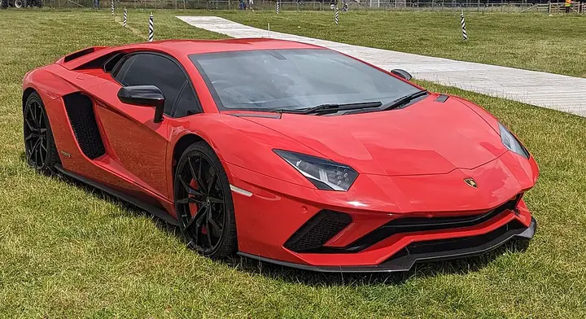
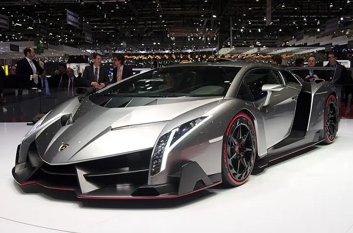
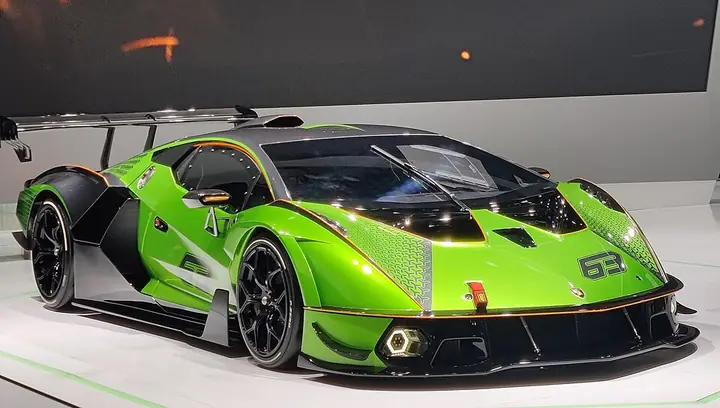
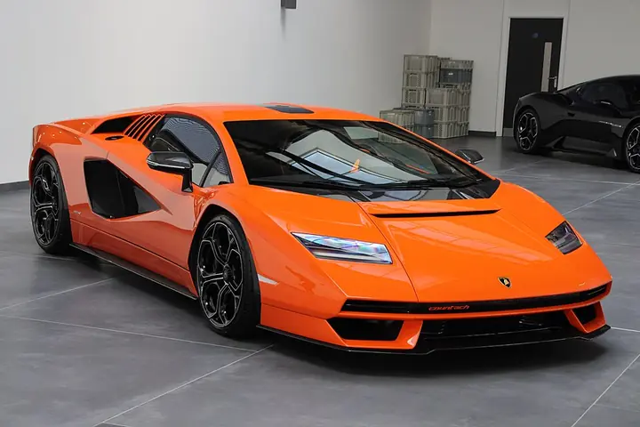

Lamborghini Aventador
2011–2022
Abstract
The Lamborghini Aventador is a sports car (S), built February 2011 – September 2022 in Italy: Sant'Agata Bolognese. Body styles: 2-door coupé, 2-door Targa top roadster. Layout: Mid-engine, all-wheel-drive. Designed by Filippo Perini (original), Mitja Borkert (Aventador S).

.jpg){kind=link}
1Specifications
| Production | February 2011 – September 2022 |
|---|---|
| Model years | 2012–2022 |
| Assembly | Italy: Sant'Agata Bolognese |
| Designer | Filippo Perini (original)Mitja Borkert (Aventador S) |
| Class | Sports car (S) |
| Body style | 2-door coupé2-door Targa top roadster |
| Layout | Mid-engine, all-wheel-drive |
| Engine | 6.5 L L539 V12 |
| Transmission | 7-speed Graziano ISR automated manual |
| Wheelbase | 2700 mm |
| Length | 4780 mm |
| Width | 2030 mm (with mirrors: 2265 mm) |
| Height | 1136 mm |
| Weight | 1575 kg LP 700-4, LP 740-4 S (dry)1731 kg LP 700-4 (with fluids, Eur)4085 lb LP 700-4 (with fluids, US)1769 kg LP 750-4 SV (with fluids, US)1819 kg LP 750-4 SV Roadster (with fluids, US)1525 kg LP 750-4 SV, SVJ LP 770-4 (dry)3902 lb SVJ LP 770-4 (with fluids, US) |
| Related | Lamborghini VenenoLamborghini CentenarioLamborghini Sián FKP 37Lamborghini Essenza SCV12Lamborghini Countach LPI 800-4 |
| Predecessor | Lamborghini Murciélago |
| Successor | Lamborghini Revuelto |
2Versions



.jpg){kind=link}


- Aventador LP 700-4 (2011–2016)
- Aventador LP 700-4 Roadster (2013–2016)
- Aventador SuperVeloce LP 750-4 (2015–2017)
- Aventador SuperVeloce LP 750-4 Roadster (2016–2017)
- Aventador S LP 740-4 (2016–2021)
- Aventador S Roadster (2017–2021)
- Aventador SVJ LP 770-4 (2018–2021)
- Aventador SVJ Roadster (2019–2021)
- Aventador LP 780-4 Ultimae (2021–2022)
- Aventador J
- Aventador LP 720-4 50º Anniversario (2013)
- Aventador Pirelli Edition (2014)
- Aventador SVJ 63 (2018)
- Aventador SVJ 63 Roadster (2019)
- Aventador SVJ Roadster Xago Edition (2020)
- Veneno
- Centenario
- SC18 Alston
- SC20 Alston
- Sián FKP 37